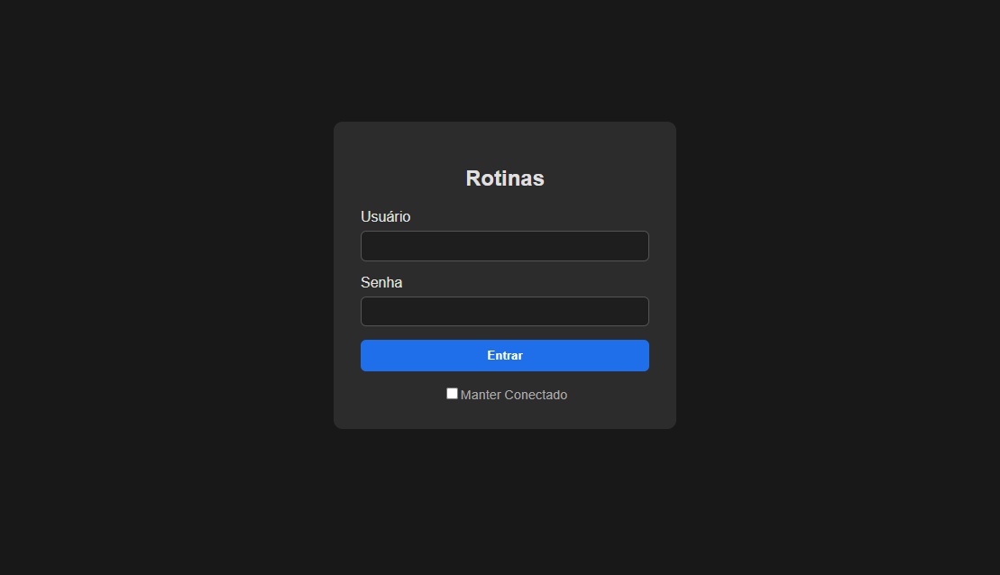
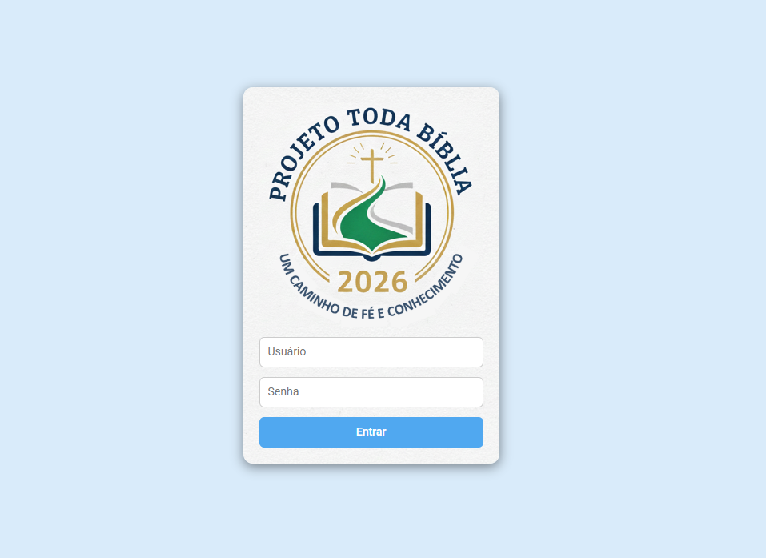

Sistema para registro interno de chamados na Central de Operações da Guarda Civil Metropolitana de Porto Alegre.
Código fonte

Intranet da Guarda Civil Metropolitana de Porto Alegre.
Sistema de organização para leitura bíblica.
